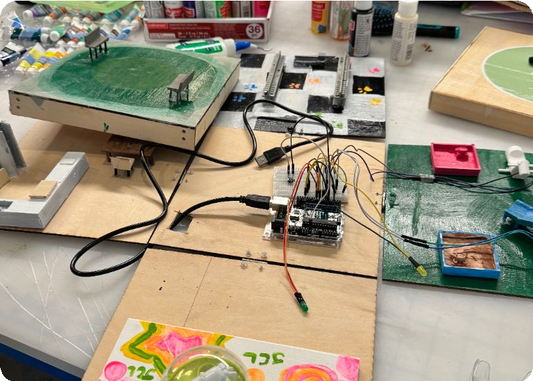
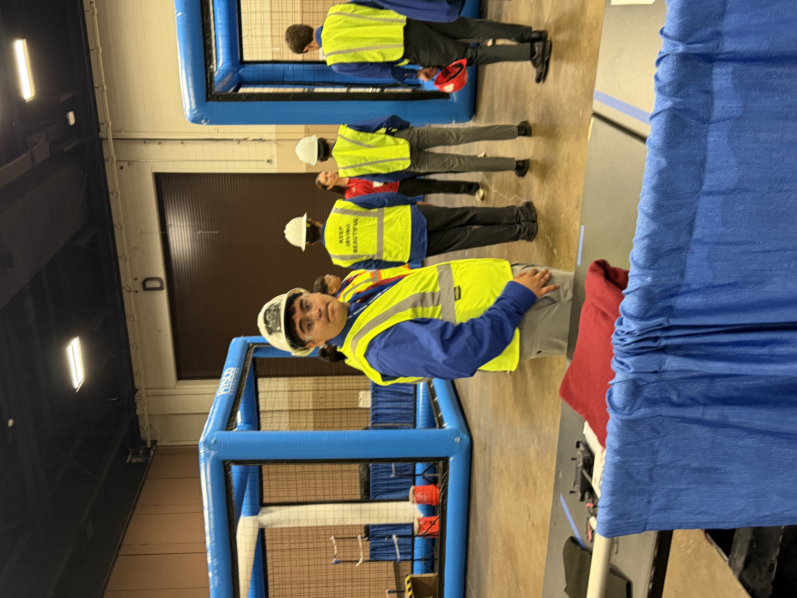
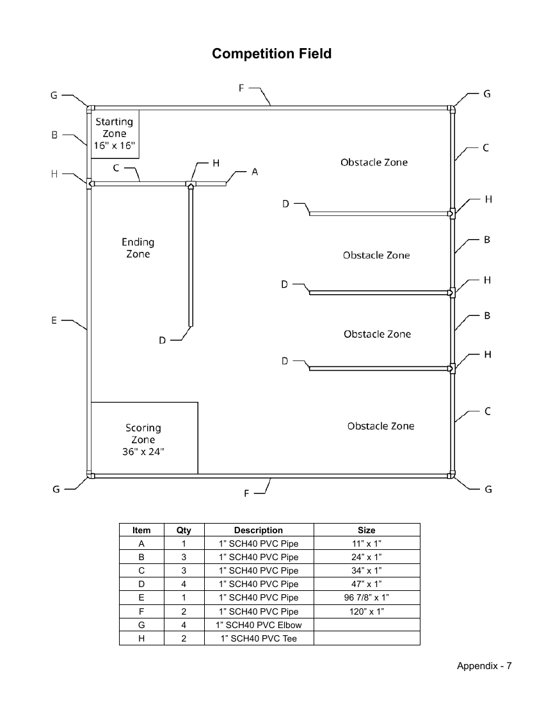

Code and control
Explore events involving programs, robots, drones, and systems that respond to a challenge.

Individual testsTeam qualifiesScratch challenge

Team of 2 · Manual flight, portfolio, and interview
Drone Challenge (UAV)
You and a partner will fly a drone through humanitarian-aid missions.
Explore Drone Challenge (UAV)Building a working deviceDocumenting code and designDemonstrating the device
Individual or team of 2–6; 1–3 representatives present · Working device, portfolio, and demonstration
Microcontroller Design
You will create a working device controlled by a microcontroller and demonstrate what it does.
Explore Microcontroller Design
Team of 2–6 · Robot run + interview
Robotics
Drive a robot through an obstacle course.
Explore RoboticsInterpreting the on-site problemBuilding and programming a modelDemonstrating the solution
Team of 3 · On-site model, program, inventor's log, and demonstration
System Control Technology
Your team builds and programs a model that carries out a process automatically.
Explore System Control Technology